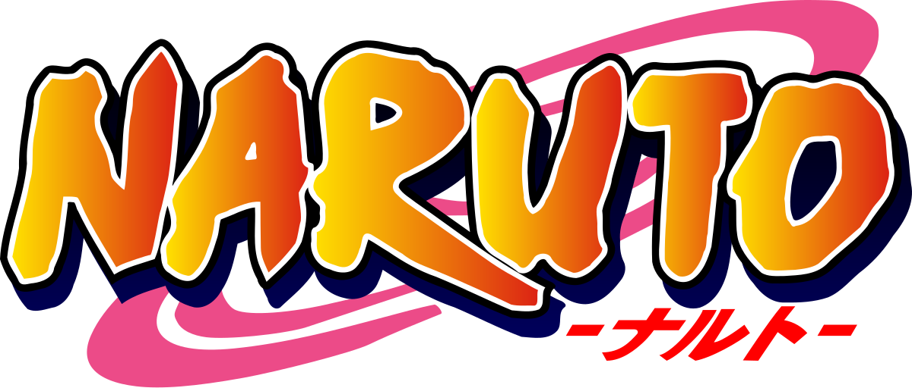
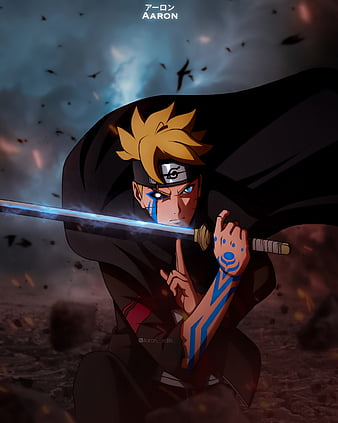

Introducción

Naruto es una serie de manga escrita e ilustrada por Masashi Kishimoto, posteriormente adaptada a una serie de anime. Narra la historia de un ninja adolescente llamado Naruto Uzumaki, cuyos padres murieron en el ataque del Zorro Demonio de Nueve Colas llamado Kurama y quien aspira a convertirse en Hokage (líder de su aldea), con el propósito de ser reconocido como alguien importante dentro de la aldea y entre sus compañeros.
Artículo Destacado
Boruto: estos son algunos de los cambios que ha sufrido el manga tras el salto temporal

Tras algún tiempo de pausa, el manga de Boruto retomó su publicación, cambiando también el nombre de la obra, señalando así que era un gran cambio de enfoque en la trama. Ahora se llamaría 'Boruto: Two Blue Vortex'. De esta forma, el título dejaba atrás todo el tema de Naruto y su generación, para dar total relevancia a la nueva generación.
Leer más...